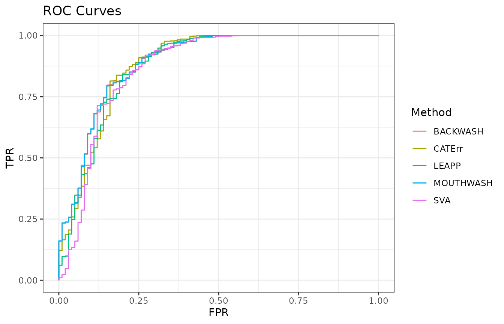

Abstract
In this vignette, I take an example simulated RNA-seq dataset and analyze it using the functions in the vicar R package. I compare their performances against the methods available in other packages. The methods in vicar are described in detail in Gerard and Stephens (2018) and Gerard and Stephens (2019).
Data
The data are simulated RNA-seq expression data based on the characteristics of the GTEx data: . The overall model for these data is \[
Y = X\beta + Z\alpha + E,
\] where \(Y\) contains the gene expression levels, \(X\) contains the observed covariates, \(\beta\) contains the coefficients of the observed covariates, \(Z\) contains the unobserved confounders, \(\alpha\) contains the coefficients of the unobserved confounders, and \(E\) contains independent Gaussian noise with column-specific variances. The data, sim_gtex consists of a list of elements:
-
YA matrix of gene expression levels. The rows index the samples and the columns index the genes. -
XA matrix of covariates. The first column is simply for an intercept term and the second column is a group indicator. -
betaThe known signal for the group indicator. -
ctlA logical vector indicating the location of control genes. -
which_nullA logical vector indicating the location of null genes.
I’ve added signal to the Y matrix, the amount of which is encoded in the vector beta. We can read in these data using the data function.
##
## Attaching package: 'dplyr'## The following objects are masked from 'package:stats':
##
## filter, lag## The following objects are masked from 'package:base':
##
## intersect, setdiff, setequal, uniondata(sim_gtex)
Y <- sim_gtex$Y
X <- sim_gtex$X
ctl <- sim_gtex$ctl
which_null <- sim_gtex$which_null
beta <- sim_gtex$betaThese data contain 20 samples and 1000 genes. The proportion of genes in these data that are null is 0.9. However, we only allow 10 of these genes to be known as negative controls.
Before we proceed with the analysis, we note that all confounder adjustment methods we explore require an estimate of the number of hidden confounders. We can use the num.sv function in the sva package to obtain this estimate. It has different approaches to estimate the number of hidden factors, and each says that there are about 3 hidden factors.
num_sv <- sva::num.sv(dat = t(Y), mod = X, method = "be")
num_sv_l <- sva::num.sv(dat = t(Y), mod = X, method = "leek")
num_sv## [1] 3## [1] 3Analysis With Controls
When there are control genes, there are many options to analyze your data. vicar, cate, and ruv all have their different versions of RUV4. We’ll just look at the default settings for each.
ruv4_vicar <- vicar::vruv4(Y = Y, X = X, k = num_sv, ctl = ctl, cov_of_interest = 2)
ruv4_cate <- cate::cate.fit(X.primary = X[, 2, drop = FALSE], X.nuis = X[, -2, drop = FALSE],
Y = Y, r = num_sv, adj.method = "nc", nc = ctl)
ruv4_ruv <- ruv::RUV4(Y = Y, X = X[, 2, drop = FALSE], ctl = ctl, k = num_sv,
Z = X[, -2, drop = FALSE])The ruv package also implements the RUV2 method.
ruv2_ruv <- ruv::RUV2(Y = Y, X = X[, 2, drop = FALSE], ctl = ctl, k = num_sv,
Z = X[, -2, drop = FALSE])A method that is both a version of RUV2 and a version of RUV4 is implemented in the vicar function ruv3.
Finally, a Bayesian version of RUV is implemented in the vicar function ruvb. I run the Gibbs sampler for much fewer iterations than what you should do in practice.
Analysis Without Controls
When control genes are not present, there are still plenty of options. Two implementations in vicar are mouthwash and backwash.
## Running mouthwash on 20 x 2 matrix X and 20 x 1000 matrix Y.
## - Computing independent basis using QR decomposition.
## - Computation took 0.011 seconds.
## - Running additional preprocessing steps.
## - Computation took 0.001 seconds.
## - Running second step of mouthwash:
## + Estimating model parameters using EM.
## + Computation took 4.227 seconds.
## + Generating adaptive shrinkage (ash) output.
## + Computation took 0.116 seconds.
## - Second step took 4.951 seconds.
## - Estimating additional hidden confounders.
## - Computation took 0.011 seconds.## - Computing independent basis using QR decomposition.
## - Computation took 0.01 seconds.
## - Running additional preprocessing steps.
## - Computation took 0 seconds.
## - Running second step of backwash:
## + Initializing parameters for EM algorithm.
## + Computation took 1.869 seconds.
## + Running one round of parameter updates.
## + Computation took 0.023 seconds.
## + Estimating model parameters using EM.
## + Computation took 13.244 seconds.
## + Generating posterior statistics.
## + Computation took 0.004 seconds.
## - Second step took 16.248 seconds.
## - Generating final backwash outputs.
## - Computation took 0.013 seconds.In terms of other packages, you can use the sva function in the sva package, the cate function in the cate package, or the leapp function in the leapp package.
cate_cate <- cate::cate.fit(X.primary = X[, 2, drop = FALSE], X.nuis = X[, -2, drop = FALSE],
Y = Y, r = num_sv, adj.method = "rr")
leapp_leapp <- leapp::leapp(data = t(Y), pred.prim = X[, 2, drop = FALSE],
pred.covar = X[, -2, drop = FALSE], num.fac = num_sv)
## Recommended pipeline for SVA
sva_sva <- sva::sva(dat = t(Y), mod = X, mod0 = X[, -2, drop = FALSE], n.sv = num_sv)## Number of significant surrogate variables is: 3
## Iteration (out of 5 ):1 2 3 4 5X.sva <- cbind(X, sva_sva$sv)
lmout <- limma::lmFit(object = t(Y), design = X.sva)
eout <- limma::eBayes(lmout)
svaout <- list()
svaout$betahat <- lmout$coefficients[, 2]
svaout$sebetahat <- lmout$stdev.unscaled[, 2] * sqrt(eout$s2.post)
svaout$pvalues <- eout$p.value[, 2]
## Sanity check
## plot(lmout$coefficients[,2] / (lmout$stdev.unscaled[, 2] * sqrt(eout$s2.post)), eout$t[,2])Compare methods
We’ll compare how all of the methods performed on these data using the pROC package.
roc_out <- list(
pROC::roc(response = which_null, predictor = c(mout$result$lfdr)),
pROC::roc(response = which_null, predictor = c(bout$result$lfdr)),
pROC::roc(response = which_null, predictor = c(cate_cate$beta.p.value)),
pROC::roc(response = which_null, predictor = c(svaout$pvalues)),
pROC::roc(response = which_null, predictor = c(leapp_leapp$p)),
pROC::roc(response = which_null, predictor = c(ruv2_ruv$p)),
pROC::roc(response = which_null, predictor = c(ruv3_vicar$pvalues_unadjusted)),
pROC::roc(response = which_null, predictor = c(ruv4_vicar$pvalues)),
pROC::roc(response = which_null, predictor = c(ruv4_cate$beta.p.value)),
pROC::roc(response = which_null, predictor = c(ruv4_ruv$p)),
pROC::roc(response = which_null, predictor = c(ruvb_vicar$lfsr2)))
name_vec <- c("MOUTHWASH", "BACKWASH", "CATErr", "SVA", "LEAPP", "RUV2", "RUV3", "RUV4v", "RUV4c", "RUV4r", "RUVb")
names(roc_out) <- name_vec
sout <- lapply(roc_out, function(x) { data.frame(TPR = x$sensitivities, FPR = 1 - x$specificities)})
for (index in 1:length(sout)) {
sout[[index]]$Method <- name_vec[index]
}
longdat <- do.call(rbind, sout)We’ll first look at the ROC Curves for the methods that use control genes.
shortdat <- dplyr::filter(longdat, Method == "RUV2" | Method == "RUV3" | Method == "RUV4v" |
Method == "RUV4c" | Method == "RUV4r" | Method == "RUVb")
ggplot(data = shortdat, mapping = aes(x = FPR, y = TPR, col = Method)) +
geom_path() + theme_bw() + ggtitle("ROC Curves")
Eyeballing it, it seems that RUV3 and RUV2 perform the best here, though not with regards to the most significant genes. The ruv version of RUV4 appears to do much worse.
Now we’ll look at the ROC curves of methods that do not use control genes.
shortdat <- dplyr::filter(longdat, Method == "MOUTHWASH" | Method == "BACKWASH" |
Method == "CATErr" | Method == "SVA" | Method == "LEAPP")
ggplot(data = shortdat, mapping = aes(x = FPR, y = TPR, col = Method)) +
geom_path() + theme_bw() + ggtitle("ROC Curves")
Eyeballing it, it seems that MOUTHWASH and BACKWASH do the best over the largest length of the curve. Note that the BACKWASH curve is nearly completely covered by the MOUTHWASH curve.
We can calculate the areas under the curve (AUC) for each method
auc_vec <- sapply(roc_out, FUN = function(x) { x$auc })
knitr::kable(sort(auc_vec, decreasing = TRUE), col.names = "AUC", digits = 3)| AUC | |
|---|---|
| MOUTHWASH | 0.892 |
| BACKWASH | 0.891 |
| RUV3 | 0.885 |
| CATErr | 0.884 |
| RUV2 | 0.884 |
| LEAPP | 0.879 |
| SVA | 0.871 |
| RUVb | 0.864 |
| RUV4v | 0.859 |
| RUV4c | 0.856 |
| RUV4r | 0.816 |
Estimating the proportion of genes that are NULL.
It is sometimes of interest to estimate the number of genes that show a signal. mouthwash and backwash already return these estimates. For other methods, we can use a summary statistic method (SSM) to get estimates of the proportion of genes that are null. Two useful SSM’s are implemented in the ashr and qvalue R packages. We’ll look at using the ashr package.
method_list <- list()
method_list$CATErr <- list()
method_list$CATErr$betahat <- c(cate_cate$beta)
method_list$CATErr$sebetahat <- c(sqrt(cate_cate$beta.cov.row * cate_cate$beta.cov.col) / sqrt(nrow(X)))## Warning in cate_cate$beta.cov.row * cate_cate$beta.cov.col: Recycling array of length 1 in vector-array arithmetic is deprecated.
## Use c() or as.vector() instead.method_list$RUV2 <- list()
method_list$RUV2$betahat <- c(ruv2_ruv$betahat)
method_list$RUV2$sebetahat <- c(sqrt(ruv2_ruv$multiplier * ruv2_ruv$sigma2))## Warning in ruv2_ruv$multiplier * ruv2_ruv$sigma2: Recycling array of length 1 in array-vector arithmetic is deprecated.
## Use c() or as.vector() instead.method_list$RUV3 <- list()
method_list$RUV3$betahat <- c(ruv3_vicar$betahat)
method_list$RUV3$sebetahat <- c(ruv3_vicar$sebetahat_unadjusted)
method_list$RUV4r <- list()
method_list$RUV4r$betahat <- c(ruv4_ruv$betahat)
method_list$RUV4r$sebetahat <- c(sqrt(ruv4_ruv$multiplier * ruv4_ruv$sigma2))## Warning in ruv4_ruv$multiplier * ruv4_ruv$sigma2: Recycling array of length 1 in array-vector arithmetic is deprecated.
## Use c() or as.vector() instead.method_list$RUV4v <- list()
method_list$RUV4v$betahat <- c(ruv4_vicar$betahat)
method_list$RUV4v$sebetahat <- c(ruv4_vicar$sebetahat_ols)
method_list$RUV4c <- list()
method_list$RUV4c$betahat <- c(ruv4_cate$beta)
method_list$RUV4c$sebetahat <- c(sqrt(ruv4_cate$beta.cov.row * ruv4_cate$beta.cov.col) / sqrt(nrow(X)))## Warning in ruv4_cate$beta.cov.row * ruv4_cate$beta.cov.col: Recycling array of length 1 in vector-array arithmetic is deprecated.
## Use c() or as.vector() instead.method_list$RUVb <- list()
method_list$RUVb$betahat <- c(ruvb_vicar$means)
method_list$RUVb$sebetahat <- c(ruvb_vicar$sd)
method_list$SVA <- list()
method_list$SVA$betahat <- c(svaout$betahat)
method_list$SVA$sebetahat <- c(svaout$sebetahat)
ashfit <- lapply(method_list, FUN = function(x) { ashr::ash(x$betahat, x$sebetahat)})
api0 <- sapply(ashfit, FUN = ashr::get_pi0)
api0 <- c(api0, MOUTHWASH = mout$pi0)
api0 <- c(api0, BACKWASH = bout$pi0)In these data, at least, MOUTHWASH, BACKWASH, and SVA have by far the most accurate estimates of the proportion of genes that are null (\(\pi_0\)), which, recall, is 0.9.
| Estimate of Pi0 | |
|---|---|
| RUV2 | 0.9383978 |
| RUV3 | 0.9351321 |
| RUVb | 0.9159199 |
| SVA | 0.9072776 |
| BACKWASH | 0.8968591 |
| MOUTHWASH | 0.8943046 |
| RUV4v | 0.7292477 |
| CATErr | 0.7162248 |
| RUV4c | 0.6990096 |
| RUV4r | 0.3922508 |
References
Gerard, David, and Matthew Stephens. 2018. “Empirical Bayes Shrinkage and False Discovery Rate Estimation, Allowing for Unwanted Variation.” Biostatistics, kxy029. https://doi.org/10.1093/biostatistics/kxy029.
———. 2019. “Unifying and Generalizing Methods for Removing Unwanted Variation Based on Negative Controls.” Statistica Sinica, in press. https://doi.org/10.5705/ss.202018.0345.